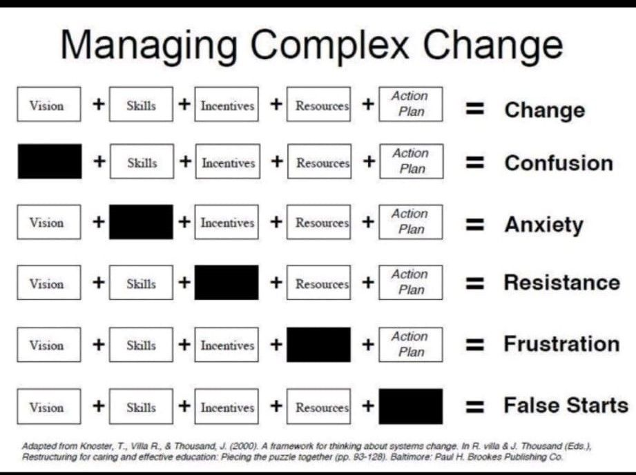
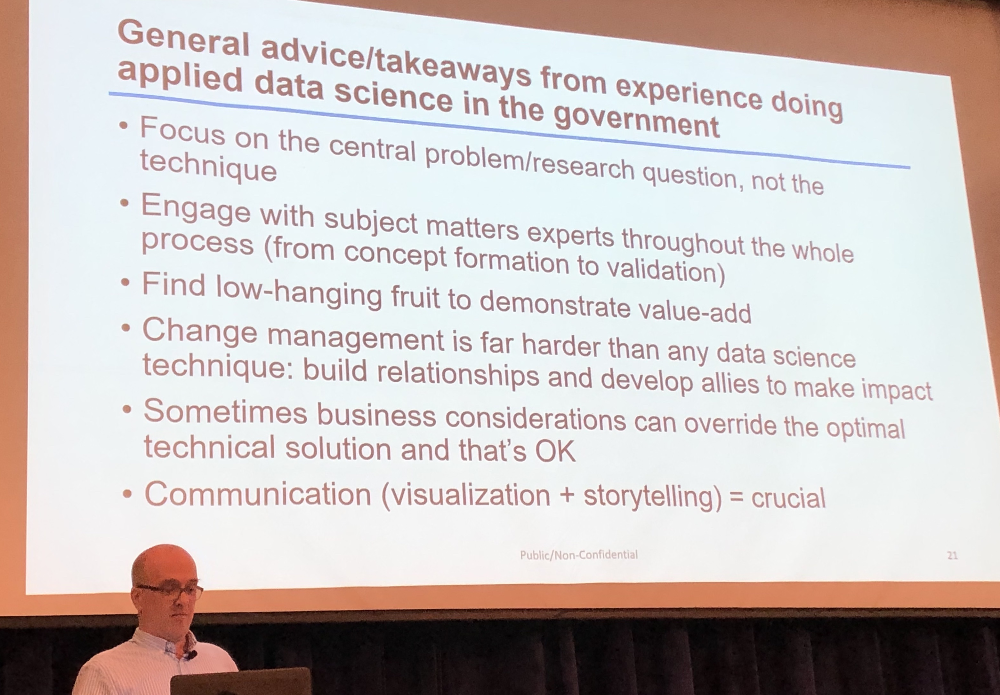

General guiding principles
Reference
Guiding principles
The first is kind of meta, but crucial:
- Rifuggire la “mistica del metodo” (focus on the big ‘why’, before the ‘how’)
in questo inizio di millennio si devono fare i conti con una vera e propria “mistica del metodo”, ereditata dal secolo precedente, e in presa diretta con le grandi utopie del Seicento: messi al bando i grandi perché della vita umana, tutti gli sforzi si concentrano sulle metodologie di ogni tipo e genere, e sulla idolatria della sperimentazione, quasi che da essa possa arrivare la soluzione di ogni problema. [Giuseppe Fioravanti]
- Fall in love with problems, not the tools. Yes, keeping in mind that tools matter: they can determine the ease and incentive to work (if they free up cognitive overhead, like R or AI) or become a barrier.
My advice is to fall in love with perennial challenges, not today’s tools. Tools, algorithms, techniques, methods… all these things are mayflies. Something better will be invented before the ink is dry on your diploma. [Cassie Kozyrkov]
- Failure is just feedback, not a sentence. In general, we don’t like to look at our failures (e.g. we write our CVs as the selected list of things we succeeded at!). And yet, failure guides us just as much (or more!) than success. It may point to the need of changing our strategy, or suggest that we are not ready (YET) to master something. Use it as feedback, or as a way to show you what you need to reinforce or go back later.
FAIL = First Attempt In Learning
REAL FAILURE is not look at mistakes (deeply), not judge what happened and not learn from it.
For most people passion is an outcome, more than a starting point.
Get information (or tasks) directly from the source (or boss) so they know the reason! and related…
Middle management is idea-killer (seek feedback from peers or leadership)
Serva ordinem et ordo servabit te
Born problem solvers - MOHAMMED YUNUS (2017 interview)
“Human beings are not born on this planet to work for somebody else. We are problem-solvers, hunters, go-getters. {…} can you imagine a cave man sending a job application?”
Self reflection
(my) skills
- logic
- truth
- persistence
- proactivity
- realism
- audacity
- candor
- humor
- ingenuity
- inspiration / intuition
don’t mistake difficult (for you), e.g. macroeconomics, for universally valuable. Focus on what you are good at, and what you like: Harness your unfair advantage!
(my) unfair advantage
- writing effectively
- speaking clearly
- teaching patiently
- learning languages fast
Other Topics
A framework for thinking about complex change

Useful tips to work with data 4 government

Team building
10 Tips for TTLs Leading Teams:
- Gather Your Core Team Early: Get a core team designated early. Create a core team Outlook email distribution list. This includes not only FM, procurement, safeguards, but also finance officer, disbursement, lawyer, DE, ACS. These people will have your back if you gain their trust and ownership early.
- Ask for Input on Design Modalities: Peer reviewers and DE are not the only ones who have the potential to improve project design. Your core team members (FM, procurement, safeguards, lawyer, etc.) support many projects at the same time, and their cross-fertilization can be revolutionary. One of the best design features came from a procurement specialist (thanks Lina!) – it had nothing to do with procurement, but rather design simplification.
- When in Doubt, CC the team: Again, inclusion is your friend. Err on the side of circulating contracts, RFPs, bidding documents, TORs, etc. to all members of your core team. Be clear who you are expecting feedback and/or clearance from, and FYI to others. All team members need a full picture of how the project is progressing. Team members can always shunt-to-file, and then the background is close at hand if it is needed later on.
- Be Clear on How to Communicate with the Client: Some TTLs prefer to be the only conduit between Bank team (including consultants) and client, and some TTLs are OK with having team members correspond directly with their country counterparts. Both modalities have strengths and weaknesses. Just be clear and consistent on what you expect as a TTL.
- Set, then Honor Expected Business Standards: Make sure there is clarity with respect to business standards for review of and response to critical technical documents. Business standards vary – for me it is five business days, but I try to deliver in less. One TTL I work with is very clear in writing “Please reply by COB Thursday” (as an example), which lets me know she is not expecting a 24-hour turnaround, and gives me time enough to juggle competing tasks. (As an aside, if everyone did this with emails we send on the weekend, then there wouldn’t be all this stress about whether our manager expects us to respond during the weekend.)
-
Don’t Procrastinate, then Declare “Fire”: Many a time I have received an email marked “URGENT”, requesting immediate turnaround, only to scroll down and see that the TTL received the document a week ago and sat on it.
- Don’t Be the TTL Who Cries Wolf: When everything is urgent, then eventually nothing is treated urgently. For those TTLs for which everything is urgent, there are (some) team members who apply the “FILO” (first in, last out) rule. Many fiduciary team members I know employ a “KIFO” rule (kindest (TTL) in, first out).
-
Communicate Timelines (for Deliverables and Travel) and Share Them Early: Many team members are juggling multiple deliverables. Put together a clear timeline, not only of project processing steps (including internal deadlines), but also expected travel dates for operational travel. There is tremendous good will for meeting expectations when there is sufficient time to work out schedules for delivering and for traveling. Many of us are negotiating with other projects’ timelines, our partner’s work travel, our parents’ ability to fly in to care for children, anniversaries, birthdays, graduations, etc.
- Let your Team Members do Their Jobs: Your team members have their areas of expertise and years of experience. Be clear what you expect of them, and then give them the space to do their jobs. Micromanagement generally backfires.
- Praise in Public, Punish in Private: This is a rule for every role in the workplace. Give positive feedback to a team member in front of the full team, and, if there are shortcomings, take these and work them out on sidebar. This demonstrates kindness and respect rather than humiliation. In every project, there will be hiccups and mistakes made. However, a strong team can recover from almost anything, and focusing on the way forward, rather than assessing blame, is much more efficient when we have so much work on our plates.